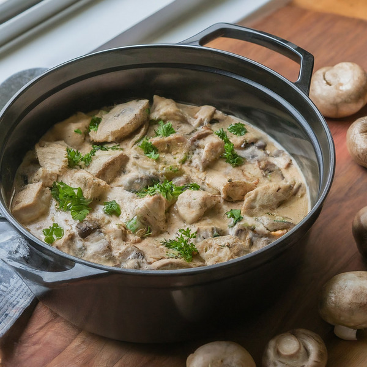

Creamy Chicken Mushroom Soup
Home

Ingredients
- 3 cups fresh mushroom, sliced
- 1/4 tsp red pepper flakes
- Salt
- Pepper
- 1 tbp fresh parsley, chopped
- 1 large onion, chopped
- 1 cup heavy cream
- 1/2 cup grated Parmesan cheese
- 2 tsp Italian seasoning
- 3 cloves garlic, minced
- 1 & 1/2 cups chicken broth
- 1.5 pounds boneless, skinless chicken thighs, cut into 1-inch cubes
- 2 tbp olive oil
Preparation
- In a large skillet over medium-high heat, warm the olive oil.
- Add the chopped onion and garlic, saute until the onion becomes translucent (about 3-4 minutes).
- Add the chicken pieces to the skillet, season them with salt and pepper, and cook until browned (approximately 5-6 minutes per side).
- Remove the chicken from the skillet and set aside.
- In the same skillet, add mushrooms and cook for 5-7 minutes until they release their moisture and begin to brown.
- Return the chicken to the skillet and stir in the chicken broth, heavy cream, Italian seasoning, and red pepper flakes. Bring the mixture to a boil.
- Reduce the heat to medium-low, cover, and simmer for 15-20 minutes, or until the chicken is cooked through and the sauce thickens.
- Stir in the grated Parmesan cheese, then season with additional salt and pepper if needed.
- Garnish with chopped fresh parsley and serve over cooked rice, pasta, or mashed potatoes.
Home